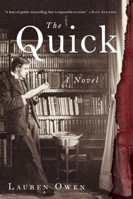

"The Quick"
- Read on 2017-11-13
- Rating: ️️️️️
- Format: 🎧 (18 hours 47 minutes)
An interestingly presented story of the "Quick" (non-vampires), and the undead. The viewpoints shifted a few times, and made the overall story a little disjointed. If I'm quibbling, a detail of one of the relationships (of a main mixed-role character) I found unnecessary. Also, the build-up to the actual climax of the book was rather short. I felt like, "Oh. Wait. This is happening _now_? Okay, I guess." That said, I enjoyed the story, and found the interactions of the two main forces to be presented in a unique way. The backstories were interesting, but not super relevant to the main story. There are better vampire books, and there are worse vampire books.
- Prior: Redshirts
- Next: Oathbringer